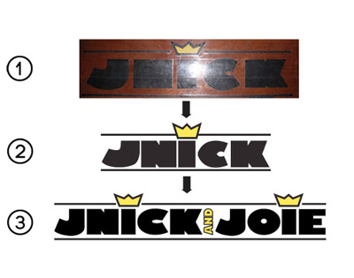
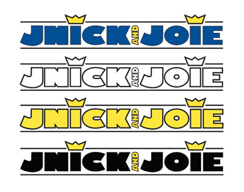

Logo Design
Opdrop Logo Redesign
I've recently joined the founding team of a new web startup called Opdrop, which is out to change the world by providing a platform to share opinions and reviews on any topic. Kind of like a Yelp for everything, but a lot cooler. My primary responsibility is to work on the redesign of the site, and that began with some rebranding.
You'll see that I changed the colors slightly, switching from a washed out gray to solid black (or white), and added a slight gradient for more pop. The little message bubble that used to live just in the first "o" of opdrop was moved over to the "p" and "d" to further suggest that our site is all about conversation and contrasting opinions. I also switched the font over to a slab serif, which I felt gave us a bit more of a current feel, and stands out over some of the typical sans serif fonts. Overall the changes aren't drastic, but I think they are poignant and effective.
Radionut Logo Design
These logos are from an older project in my Intro to Visual Media class about 2 years ago. We were asked to come up with some new business or entity and design three logos for it. I created a fictional web radio company called "Radionut." All three were created as vector graphics in Adobe Illustrator.
Jnick and Joie Logo Design
 The logo's were commissioned by a friend who was looking to start a t-shirt company. He gave me an old photograph of a logo he had designed previously, and my job was to create a streamlined digital version of that.